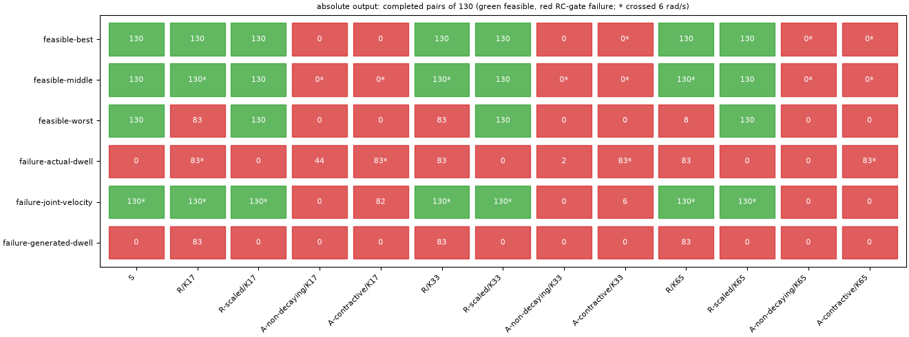
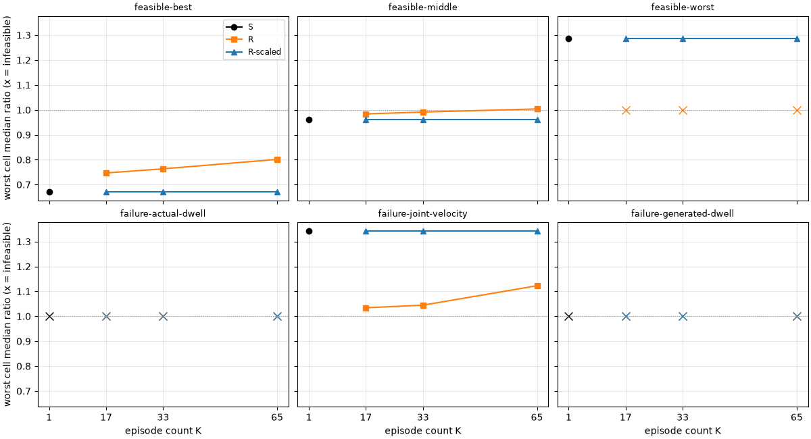
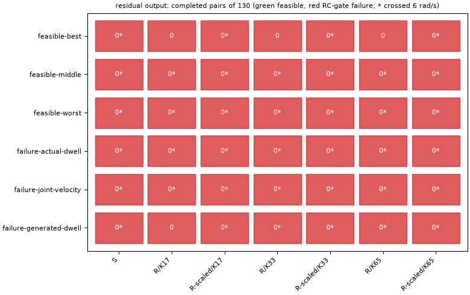
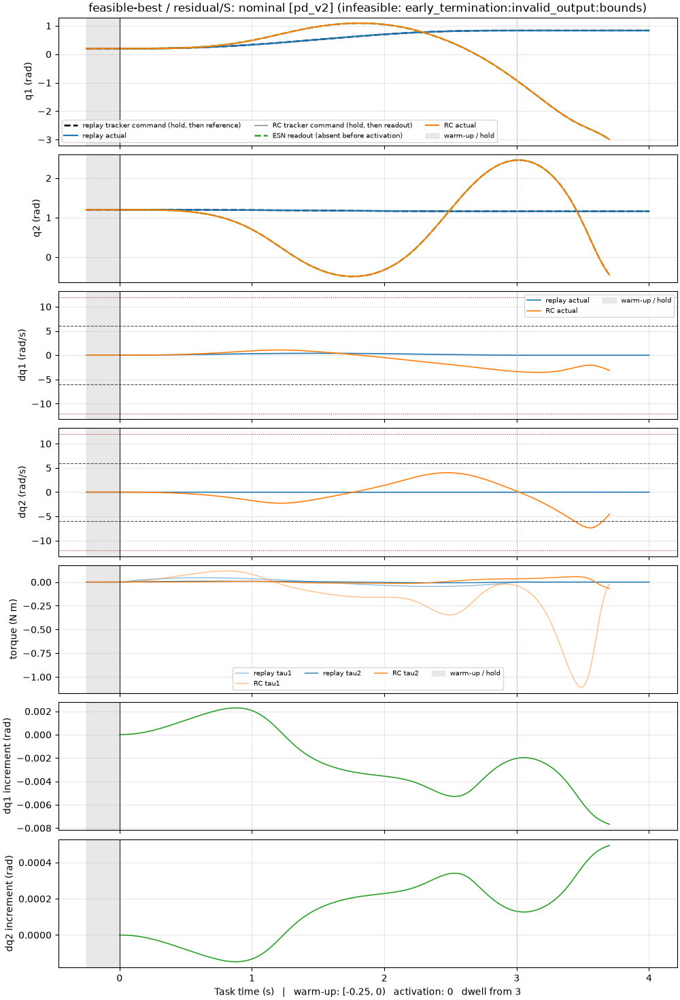
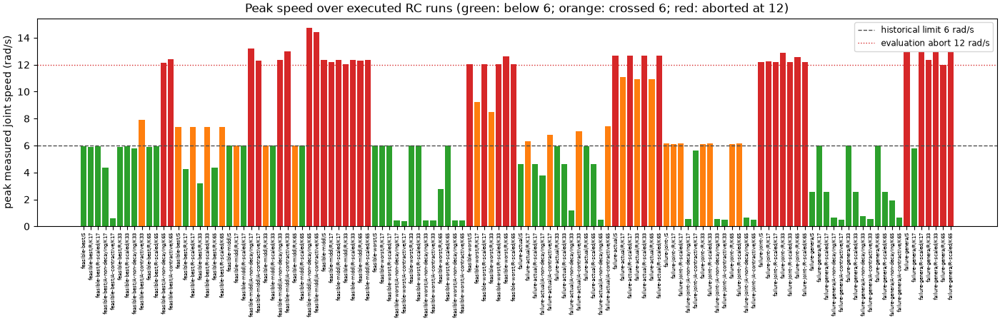
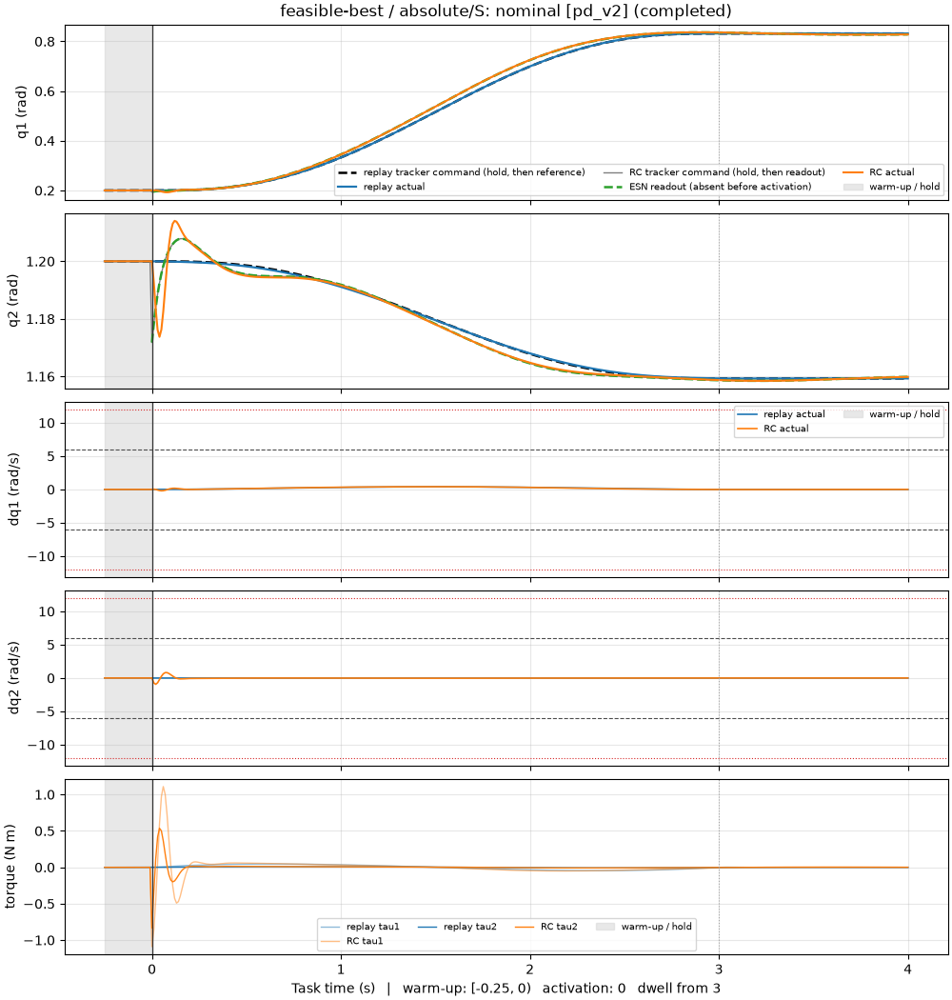
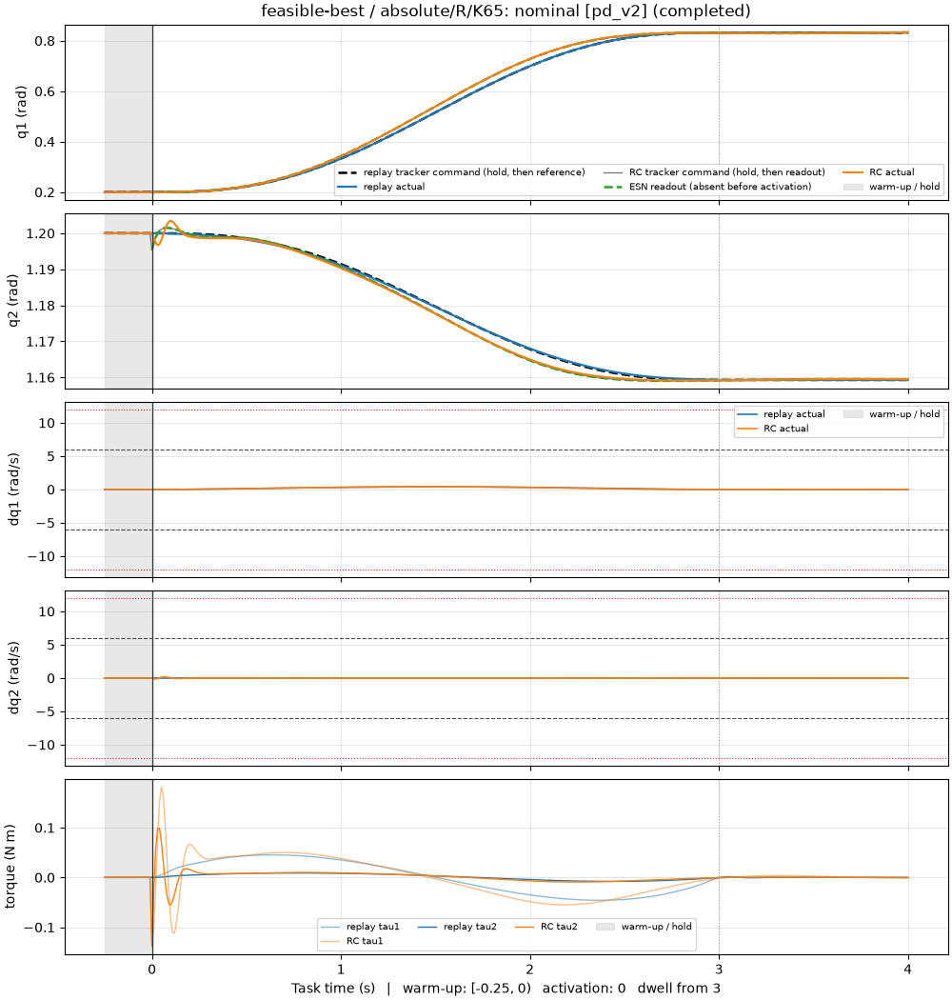
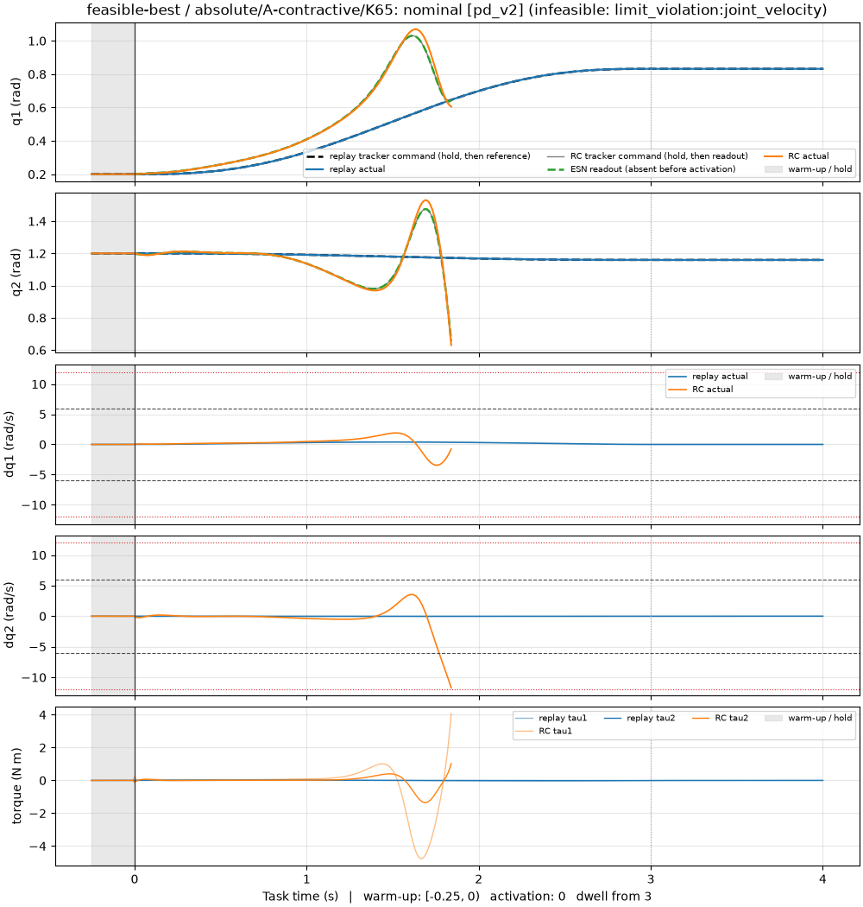
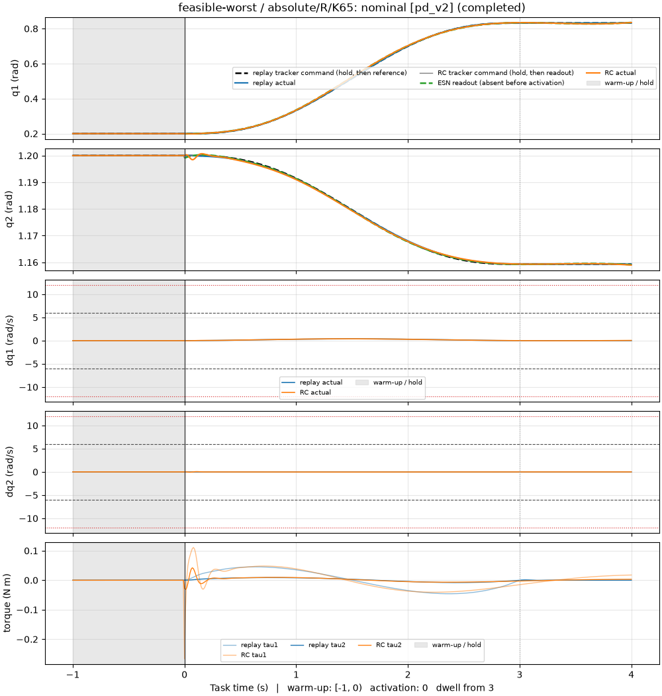
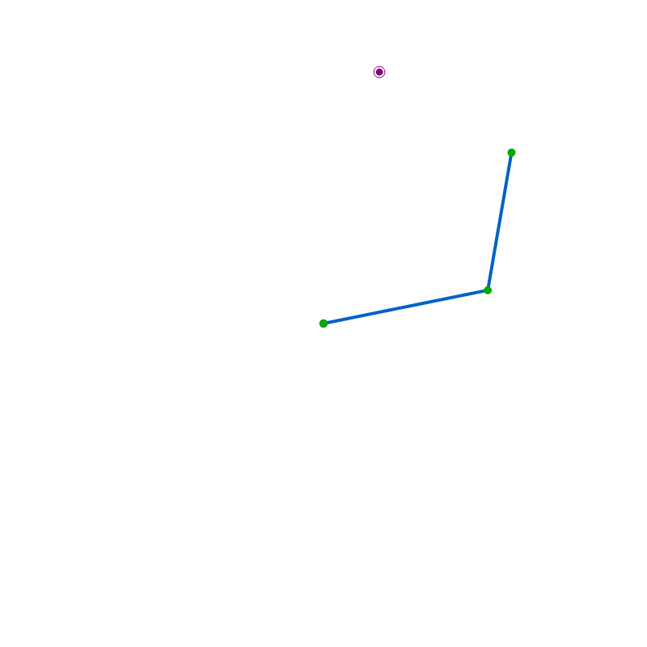

Does repeating one demonstration
change how a robot recovers?
The recovery experiment compared one demonstration with the same demonstration plus 16, 32, or 64 varied synthetic episodes. That comparison changed two things at once: the trajectories and the number of training rows. This pilot adds the missing control. Every synthetic episode is replaced by an exact copy of the original, at six historical configurations, and the ridge parameter is made explicit.
Findings, not yet a verdict. Of the 120 behavioral configurations, 25 were feasible under the pilot's 12 rad/s evaluation abort, and all 25 train on the original demonstration alone, once or in exact copies, with absolute output. No augmented arm and no residual-output arm was feasible. Two of the 25 complete models, feasible-best's repeated fits at K = 33 and 65, satisfy the historical eligibility structure applied as a descriptive diagnostic; its single-demonstration baseline does not. Repeating the demonstration at a fixed ridge parameter changed one entry's verdict and shifted early-command medians elsewhere; repeating it with a compensated ridge parameter reproduced the single-demonstration result everywhere, with median differences of order 10−12 or smaller. One numerical equivalence check failed and is carried as an accepted exception. The owner's review (M3REP-GATE) decides what follows; this page reports what was measured.
Experiment task_1a_repetition_v1 · Overview written 10 September 2026 ·
Report tables · Approved plan ·
Execution accounting
One demonstration, used many times
The recovery experiment's timing-only arm produced 134 feasible models out of 500 sampled trials, none of which met the recovery eligibility rule, and neither absolute-output augmentation arm produced a feasible model at all. Augmentation, however, changed both the trajectory distribution and the number of loss rows in the readout fit. Whether the extra rows or the varied trajectories mattered could not be told apart.
At the same ESN configuration, episode count, and ridge parameter, how does closed-loop recovery differ when the additional episodes are exact repeats versus varied trajectories?
The control is cheap to state and subtle to evaluate. The trainer resets the reservoir for every episode and stacks all loss rows into one ridge fit, so K identical episodes produce K identical blocks of rows. The pinned ridge solver adds its parameter directly to the Gram-matrix diagonal without dividing by the row count. Two exact-arithmetic identities follow:
argminW [ K ‖XW − Y‖² + α₀ ‖W‖² ] = argminW [ ‖XW − Y‖² + (α₀ / K) ‖W‖² ]
An improvement from exact repetition alone would therefore point to regularization strength or to floating-point computation, not to additional state coverage. Floating-point accumulation orders can differ between the repeated and the single fit, and small prediction differences can grow in closed loop, so the plan separates a numerical validation from the behavioral comparison (plan sections 2 and 6).
Six fixed configurations, twenty behavioral configurations each
The panel was frozen before any pilot arm was trained (panel manifest). It takes the best, median, and worst feasible trial of the timing-only recovery search by early-gap objective and the lowest-numbered trial of each of three failure categories. Each entry keeps its reservoir seed, size, leak, input scaling, warm-up, and ridge parameter α₀; nothing was retuned.
| Entry | Source trial | Role in the historical search | Warm-up (s) |
|---|---|---|---|
| feasible-best | 17 | Rank 1 of 134 feasible trials | 0.25 |
| feasible-middle | 136 | Rank 67 of 134 | 0 |
| feasible-worst | 53 | Rank 134 of 134 | 1 |
| failure-actual-dwell | 1 | First failure: actual-motion dwell gate | 0.25 |
| failure-joint-velocity | 0 | First failure: joint-speed limit (also the historical anchor) | 1 |
| failure-generated-dwell | 28 | First failure: generated-reference dwell gate | 0 |
Arms at every entry
With K ∈ {17, 33, 65} total episodes, every entry trains the arms below. The absolute formulation predicts the next joint position; the residual formulation predicts the next-step increment and reconstructs the command from the measured posture. The equivalences hold within a formulation, never across formulations.
| Arm | Training episodes | Solver parameter | Formulations | Role |
|---|---|---|---|---|
| S | Original once | α₀ | absolute, residual | Baseline, evaluated once per entry |
| R | K exact copies | α₀ | absolute, residual | The requested repetition control |
| R-scaled | K exact copies | K α₀ | absolute, residual | Regularization-compensated control |
| A-non-decaying | Original + K − 1 non-decaying synthetic episodes | α₀ | absolute | Count-matched varied-data comparison |
| A-contractive | Original + K − 1 contractive synthetic episodes | α₀ | absolute | Count-matched target-contracting comparison |
| S-effective | Original once | α₀ / K | absolute, residual | Numerical reference for R; fitted and compared, never evaluated in closed loop |
Each entry therefore has 13 absolute behavioral configurations (S once; R, R-scaled, and both augmentation families at three counts) and 7 residual ones (S once; R and R-scaled at three counts), plus six S-effective numerical references: 78 absolute and 42 residual behavioral configurations and 36 reference fits in all. Both augmentation families use the fixed anchor of the recovery experiment (σ = 0.05 rad, φ = 0.99, γ = 1, seed bank 1) and the smaller episode banks are verified prefixes of the larger ones.
Numerical validation first
Before any closed-loop run, every fit was checked (numerical validation): repeated arrays and reservoir states are bitwise identical to the single episode's, the normalized normal-equation residual of every fit is at or below 10−10, refits in fresh processes reproduce the cached readouts, and the two identities are compared on a fixed probe matrix at an absolute tolerance of 10−8 rad and a relative tolerance of 10−8. The outcome of those comparisons is in section 04.
Paired closed-loop evaluation
Each behavioral model faced the recovery experiment's 65 development scenarios under two trackers, 130 scenario/tracker pairs, against a replay of the demonstration under the same tracker and warm-up. The sweep follows the fixed evaluation order and stops at the model's first infeasible pair; the remaining pairs are recorded as unexecuted rather than failed. Feasibility gates are the historical ones (target dwell, stationary dwell, generated-reference dwell, output bounds) with one declared change: a simulation-only joint-speed abort at 12 rad/s replaces the historical 6 rad/s limit, and every crossing of 6 rad/s is recorded per run and phase as a diagnostic (section 06).
Task clock. Every time-series figure and animation on this page uses task-relative time, run time minus the warm-up. Warm-up occupies the shaded negative interval, activation is at 0 s, movement runs over [0, 3) s, and dwell over [3, 4] s. The ESN readout is absent before activation; the tracker command is drawn separately so that the hold-to-generation jump at zero is visible. Run records keep their original timestamps; only the export shifts the clock.
All fits and runs were executed in this machine's canonical execution environment, single-threaded
and pinned to its performance cores (execution record,
identity a7f034c7aef4), which every run record and cache identity binds.
Only the original demonstration, with absolute output, produced feasible models

| Entry | absolute/S | absolute/R/K65 | absolute/R-scaled/K65 |
|---|---|---|---|
| feasible-best | feasible | feasible | feasible |
| feasible-middle | feasible | feasible | feasible |
| feasible-worst | feasible | rc_gate_failure | feasible |
- feasible-worst is where repetition at fixed α₀ changed the verdict. S and R-scaled complete all 130 pairs at every count. R fails at K = 17 and 33 after 83 completed pairs, at scenario 41 under computed torque on the dwell gates, and at K = 65 after 8 pairs, at scenario 4 under PD v2 on the stationary-dwell gate.
- At the two dwell-failure entries, R lasts longer than S. failure-actual-dwell and failure-generated-dwell remain infeasible for every arm, as in the historical search, but S and R-scaled fail at the very first pair whereas R at every count completes 83 pairs before failing at scenario 41 under computed torque.
- No augmented configuration was feasible (0 of 36). At the three feasible entries and at failure-generated-dwell both families fail at the first pair: dwell gates at K = 17 and 33, and at feasible-best and feasible-middle the 12 rad/s abort at K = 65. At failure-actual-dwell the contractive family completes 83 pairs at every count and the non-decaying family 44 (K = 17) and 2 (K = 33); at failure-joint-velocity the contractive family completes 82 (K = 17) and 6 (K = 33). The plan's main varied-versus-repeated comparison therefore has no shared completed pairs at any feasible entry; it is a comparison of verdicts.
- Every residual-output configuration failed at its first pair (section 05).
Early commands: signed differences, not only verdicts
For pairs both arms completed, the report takes the median of the first-0.5-second command-gap integral and of the activation jump, and the median of their signed differences in original units. The table gives R against S at K = 65; R-scaled against S is listed below it. Comparisons with few shared pairs describe those pairs only.
| Entry | Shared pairs | Early gap R | Early gap S | diff | Jump R (rad) | Jump S (rad) | diff | Worst cell R | Worst cell S |
|---|---|---|---|---|---|---|---|---|---|
| feasible-best | 130 | 0.001827 | 0.002408 | -0.001017 | 0.03837 | 0.04751 | -0.02403 | 0.8012 | 0.6704 |
| feasible-middle | 130 | 0.006093 | 0.005676 | 5.707e-05 | 0.04984 | 0.05159 | -0.001637 | 1.004 | 0.9602 |
| feasible-worst | 8 | 0.003506 | 0.00345 | -0.0008637 | 0.04743 | 0.05342 | -0.007945 | n/a | 1.286 |
| failure-joint-velocity | 130 | 0.004423 | 0.004719 | -0.0002777 | 0.04943 | 0.05007 | -0.002808 | 1.123 | 1.344 |
The signed differences do not point one way. At feasible-best the repeated fit's early gap and jump are smaller than S's on the median pair, yet its worst cell is larger and grows with K (0.7467, 0.7632, 0.8012 at K = 17, 33, 65 against S's 0.6704). At feasible-middle the median gap is marginally larger and the worst cell crosses 1 at K = 65. At failure-joint-velocity both medians and the worst cell are smaller for R. At feasible-worst the eight shared pairs precede R's failure.
R-scaled against S, K = 65, median signed differences of the early gap: -1.72e-14 (feasible-best), -1.358e-12 (feasible-middle), 1.974e-13 (feasible-worst), -2.841e-14 (failure-joint-velocity); the jump differences are of the same order, and every verdict matches.

The historical eligibility structure as a diagnostic
The recovery experiment's eligibility rule is applied here descriptively, with its ratio and dwell thresholds and its ordering unchanged and its feasibility limit explicitly the pilot's 12 rad/s abort:
Historical recovery-v1 eligibility applied as a descriptive diagnostic (plan section 7.2): every feasibility gate under the pilot's 12 rad/s evaluation abort instead of the historical 6 rad/s limit, both median ratios against matched replay below 1, and improvement of both early metrics (command-gap ratio below 1 and a smaller activation jump than replay) in at least 15 of the 20 scenarios of each of the four posture-class-by-tracker cells. Only models that completed every pair are evaluated; incomplete sweeps carry no cell figures. A passing configuration is a development candidate only; this pilot selects or freezes no model.
Of the 25 models that completed every pair, 2 satisfy every cell: feasible-best's absolute R at K = 33 and at K = 65. Neither crossed 6 rad/s in any executed run (0 of the two), so the changed limit did not decide these verdicts. feasible-best's S and R-scaled arms agree with the historical trial-17 cells to the displayed precision: the small-posture cells fail on 11 of 20 improving scenarios and the large-posture cells pass on 15 of 20. R at K = 17 improves 12 of 20 small-posture scenarios; at K = 33 and 65 it reaches 16, with larger small-posture gap medians than S and smaller jump medians. Every other complete model fails at least one cell, and the 95 incomplete sweeps are not evaluated. Under the plan's rule the two passing configurations are development candidates only; this pilot selects or freezes no model, and the finding stands beside the C11 caveat and the limitations below.
| Entry | Arm | small · PD v2 | small · computed torque | large · PD v2 | large · computed torque | Verdict |
|---|---|---|---|---|---|---|
| feasible-best | absolute/S | 0.6704 / 0.9059 / 11 of 20 / fail | 0.3123 / 0.9059 / 11 of 20 / fail | 0.5288 / 0.733 / 15 of 20 / pass | 0.2335 / 0.733 / 15 of 20 / pass | not eligible |
| feasible-best | absolute/R/K17 | 0.7467 / 0.7425 / 12 of 20 / fail | 0.2541 / 0.7425 / 12 of 20 / fail | 0.4331 / 0.6053 / 17 of 20 / pass | 0.1786 / 0.6053 / 18 of 20 / pass | not eligible |
| feasible-best | absolute/R-scaled/K17 | 0.6704 / 0.9059 / 11 of 20 / fail | 0.3123 / 0.9059 / 11 of 20 / fail | 0.5288 / 0.733 / 15 of 20 / pass | 0.2335 / 0.733 / 15 of 20 / pass | not eligible |
| feasible-best | absolute/R/K33 | 0.7632 / 0.7602 / 16 of 20 / pass | 0.2423 / 0.7602 / 16 of 20 / pass | 0.4154 / 0.5691 / 18 of 20 / pass | 0.1657 / 0.5691 / 18 of 20 / pass | eligible |
| feasible-best | absolute/R-scaled/K33 | 0.6704 / 0.9059 / 11 of 20 / fail | 0.3123 / 0.9059 / 11 of 20 / fail | 0.5288 / 0.733 / 15 of 20 / pass | 0.2335 / 0.733 / 15 of 20 / pass | not eligible |
| feasible-best | absolute/R/K65 | 0.8012 / 0.7652 / 16 of 20 / pass | 0.248 / 0.7652 / 19 of 20 / pass | 0.3827 / 0.5241 / 18 of 20 / pass | 0.163 / 0.5241 / 20 of 20 / pass | eligible |
| feasible-best | absolute/R-scaled/K65 | 0.6704 / 0.9059 / 11 of 20 / fail | 0.3123 / 0.9059 / 11 of 20 / fail | 0.5288 / 0.733 / 15 of 20 / pass | 0.2335 / 0.733 / 15 of 20 / pass | not eligible |
| feasible-middle | absolute/S | 0.9436 / 0.9943 / 11 of 20 / fail | 0.9585 / 0.9943 / 11 of 20 / fail | 0.9167 / 0.9906 / 15 of 20 / pass | 0.9602 / 0.9906 / 15 of 20 / pass | not eligible |
| feasible-middle | absolute/R/K17 | 0.9337 / 0.9929 / 11 of 20 / fail | 0.9838 / 0.9929 / 13 of 20 / fail | 0.9305 / 0.9784 / 14 of 20 / fail | 0.9642 / 0.9784 / 18 of 20 / pass | not eligible |
| feasible-middle | absolute/R-scaled/K17 | 0.9436 / 0.9943 / 11 of 20 / fail | 0.9585 / 0.9943 / 11 of 20 / fail | 0.9167 / 0.9906 / 15 of 20 / pass | 0.9602 / 0.9906 / 15 of 20 / pass | not eligible |
| feasible-middle | absolute/R/K33 | 0.9316 / 0.9909 / 12 of 20 / fail | 0.991 / 0.9909 / 13 of 20 / fail | 0.9393 / 0.9762 / 14 of 20 / fail | 0.9766 / 0.9762 / 17 of 20 / pass | not eligible |
| feasible-middle | absolute/R-scaled/K33 | 0.9436 / 0.9943 / 11 of 20 / fail | 0.9585 / 0.9943 / 11 of 20 / fail | 0.9167 / 0.9906 / 15 of 20 / pass | 0.9602 / 0.9906 / 15 of 20 / pass | not eligible |
| feasible-middle | absolute/R/K65 | 0.9201 / 0.989 / 12 of 20 / fail | 1.004 / 0.989 / 9 of 20 / fail | 0.9437 / 0.9729 / 14 of 20 / fail | 0.9892 / 0.9729 / 14 of 20 / fail | not eligible |
| feasible-middle | absolute/R-scaled/K65 | 0.9436 / 0.9943 / 11 of 20 / fail | 0.9585 / 0.9943 / 11 of 20 / fail | 0.9167 / 0.9906 / 15 of 20 / pass | 0.9602 / 0.9906 / 15 of 20 / pass | not eligible |
| feasible-worst | absolute/S | 1.286 / 1.094 / 0 of 20 / fail | 0.6426 / 1.094 / 2 of 20 / fail | 1.175 / 1.024 / 1 of 20 / fail | 1.034 / 1.024 / 2 of 20 / fail | not eligible |
| feasible-worst | absolute/R-scaled/K17 | 1.286 / 1.094 / 0 of 20 / fail | 0.6426 / 1.094 / 2 of 20 / fail | 1.175 / 1.024 / 1 of 20 / fail | 1.034 / 1.024 / 2 of 20 / fail | not eligible |
| feasible-worst | absolute/R-scaled/K33 | 1.286 / 1.094 / 0 of 20 / fail | 0.6426 / 1.094 / 2 of 20 / fail | 1.175 / 1.024 / 1 of 20 / fail | 1.034 / 1.024 / 2 of 20 / fail | not eligible |
| feasible-worst | absolute/R-scaled/K65 | 1.286 / 1.094 / 0 of 20 / fail | 0.6426 / 1.094 / 2 of 20 / fail | 1.175 / 1.024 / 1 of 20 / fail | 1.034 / 1.024 / 2 of 20 / fail | not eligible |
| failure-joint-velocity | absolute/S | 1.125 / 0.9745 / 3 of 20 / fail | 0.7822 / 0.9745 / 5 of 20 / fail | 0.9937 / 0.9116 / 14 of 20 / fail | 1.344 / 0.9116 / 5 of 20 / fail | not eligible |
| failure-joint-velocity | absolute/R/K17 | 1.034 / 0.9344 / 8 of 20 / fail | 0.6586 / 0.9344 / 10 of 20 / fail | 0.8405 / 0.7916 / 18 of 20 / pass | 0.9536 / 0.7916 / 9 of 20 / fail | not eligible |
| failure-joint-velocity | absolute/R-scaled/K17 | 1.125 / 0.9745 / 3 of 20 / fail | 0.7822 / 0.9745 / 5 of 20 / fail | 0.9937 / 0.9116 / 14 of 20 / fail | 1.344 / 0.9116 / 5 of 20 / fail | not eligible |
| failure-joint-velocity | absolute/R/K33 | 1.045 / 0.9374 / 7 of 20 / fail | 0.6893 / 0.9374 / 10 of 20 / fail | 0.8552 / 0.8014 / 18 of 20 / pass | 0.9872 / 0.8014 / 8 of 20 / fail | not eligible |
| failure-joint-velocity | absolute/R-scaled/K33 | 1.125 / 0.9745 / 3 of 20 / fail | 0.7822 / 0.9745 / 5 of 20 / fail | 0.9937 / 0.9116 / 14 of 20 / fail | 1.344 / 0.9116 / 5 of 20 / fail | not eligible |
| failure-joint-velocity | absolute/R/K65 | 1.057 / 0.948 / 5 of 20 / fail | 0.7074 / 0.948 / 10 of 20 / fail | 0.9113 / 0.8365 / 18 of 20 / pass | 1.123 / 0.8365 / 7 of 20 / fail | not eligible |
| failure-joint-velocity | absolute/R-scaled/K65 | 1.125 / 0.9745 / 3 of 20 / fail | 0.7822 / 0.9745 / 5 of 20 / fail | 0.9937 / 0.9116 / 14 of 20 / fail | 1.344 / 0.9116 / 5 of 20 / fail | not eligible |
The compensated control reproduced the baseline; the fixed-parameter control did not
Of the 108 numerical equivalence rows (36 absolute prediction comparisons, and 36 residual comparisons each checked on the increment and on the reconstructed command), 107 passed the approved tolerances. The one failure is feasible-middle's absolute R/K65 against its S-effective reference: largest prediction difference 2.93e-08 rad against the 10−8 rad tolerance, in a normal-equation system with condition number near 109. The diagnosis reproduces the discrepancy with an 80-bit reference solution and attributes it to floating-point accumulation and solution in that ill-conditioned problem, with the qualification that its NumPy reconstruction can include assembly differences from the Eigen-based solver. The owner accepted the failure as a bound exception (C11) without changing the fit, the tolerances, or the panel:
C11: the feasible-middle absolute R/K65 fit did not demonstrate numerical agreement with S-effective within the approved tolerance (largest prediction difference 2.93e-8 rad); the fit is retained unchanged, the exact-arithmetic ridge identity stands, and this small discrepancy does not establish that closed-loop behavior is unaffected.
Behaviorally, R-scaled matched S in every one of the 18 absolute and 18 residual R-scaled-versus-S comparisons (six entries at three counts per formulation) and, where both completed, in every reported median to within about 10−12. The exact identity "K copies at K α₀ equals S" therefore survived closed-loop simulation at these settings. R did not match S: it changed the verdict at feasible-worst, prolonged the sweep at the two dwell-failure entries, and shifted the medians shown above. In exact arithmetic R at α₀ is S at α₀ / K, so within this pilot the effect of repetition at a fixed solver parameter is the effect of a K-fold smaller effective ridge parameter, up to floating-point differences. The pilot does not separate a regularization mechanism from numerical computation, and at feasible-middle K = 65 the numerical agreement itself was not demonstrated. The validation record keeps every comparison, including the failed one, with its measured differences.
Every residual model failed at its first pair
The 42 residual-output configurations (S, R, and R-scaled at six entries and three counts) all stopped at the nominal scenario under PD v2, the first pair of the evaluation order: 42 of 42. Twenty-nine hit the 12 rad/s abort, twelve terminated when the generated command left the joint bounds late in the run, and one (feasible-best residual/R/K17) failed the dwell gates. The residual numerical equivalences passed on both the increment and the reconstructed command, so the closed-loop failures are not a fitting artifact of the repetition arms; the residual S baselines fail in the same way.




These fits reuse configurations that the historical search tuned for absolute output; the plan prescribed no residual-specific retuning. The result says that repetition did not rescue residual output at these settings, not that residual output is unusable.
A 12 rad/s abort, with 6 rad/s crossings counted separately
The historical searches declared a run infeasible at 6 rad/s joint speed. This pilot lets a simulation continue to 12 rad/s and records every crossing of 6 rad/s per run and phase, so that the paired arms share one threshold while the historical comparison stays visible. Within this pilot, 61 configurations crossed 6 rad/s in an executed run and 37 were aborted at 12 rad/s. Among the 25 feasible models, 10 crossed 6 rad/s: all seven S, R, and R-scaled sweeps of failure-joint-velocity (peaks 6.08 to 6.16 rad/s) and feasible-middle's three R arms (peaks 6.00 to 6.01 rad/s, in six of 130 runs each, while its S and R-scaled arms peak at 5.99 rad/s).

Consequences for reading this page: a feasible sweep here is not a recovery-v1 success unless it never crossed 6 rad/s, and the pilot's feasibility fractions cannot be compared with the historical searches' fractions. The dwell and ratio thresholds are unchanged.
Representative runs, chosen by position
Selection rule, declared before any example was viewed.
For every panel entry, the first pair of the fixed evaluation order (the nominal scenario under pd_v2) of the absolute S, R/K65, R-scaled/K65, and A-contractive/K65 arms and of the residual S arm, whatever its outcome. Declared at the start of M3REP-007, after the execution accounting was visible; the rule selects by position in the panel, never by result, so failures are shown as often as successes.
Thirty trajectory figures follow from the rule, one per entry and arm; the report lists them all and the table at the end of this section links every one. Each figure draws, on the task clock, the replay tracker command (hold, then the demonstration reference), the replay motion, the RC tracker command (hold, then the readout), the ESN readout itself (absent before activation), and the RC motion, then the joint speeds with both limits, the applied torques, and for residual output the two predicted increments.








Two RC runs and the replay they share
The animation rule takes feasible-best's representative pair of absolute S and absolute R/K65 and the
replay run both were paired with, exported on the task clock. The player's t label shows
task time in seconds: the hold runs from −0.25 s, activation is at 0 s, and matching frames show
matching task times. The three playbacks are independent, not frame-synchronized.
Motion is off until requested. "Stop motion" removes the GIFs.
feasible-best · nominal scenario · PD v2 · absolute S, absolute R/K65, and replay

run-20260910-79fe0985a4b1
run-20260910-10f86520d538run-20260910-54e04960dcbbAnimations play back recorded joint positions; they do not rerun the controller. The target ring is the 1 cm tolerance. Files: absolute S, absolute R/K65, replay.


All thirty representative trajectory figures
| Entry | absolute/S | absolute/R/K65 | absolute/R-scaled/K65 | absolute/A-contractive/K65 | residual/S |
|---|---|---|---|---|---|
| feasible-best | completed | completed | completed | infeasible: limit_violation:joint_velocity | infeasible: early_termination:invalid_output:bounds |
| feasible-middle | completed | completed | completed | infeasible: limit_violation:joint_velocity | infeasible: limit_violation:joint_velocity |
| feasible-worst | completed | completed | completed | infeasible: dwell:dwell_stationary | infeasible: limit_violation:joint_velocity |
| failure-actual-dwell | infeasible: dwell:dwell_stationary | completed | infeasible: dwell:dwell_stationary | completed | infeasible: limit_violation:joint_velocity |
| failure-joint-velocity | completed | completed | completed | infeasible: dwell:dwell_stationary | infeasible: limit_violation:joint_velocity |
| failure-generated-dwell | infeasible: generated_dwell:generated_dwell_stationary | completed | infeasible: generated_dwell:generated_dwell_stationary | infeasible: dwell:dwell_in_tolerance,dwell_stationary | infeasible: limit_violation:joint_velocity |


Each cell states the representative pair's outcome; the sweep status of the whole configuration is in the report tables.
What this pilot can and cannot say
- The panel is six configurations chosen from historical development outcomes of one demonstration. Reusing S as the comparator for three counts creates no additional independent baselines.
- Augmentation uses one fixed anchor and seed bank; the varied arms are fresh matched fits at the panel settings, not the historical study's winners.
- First-failure censoring hides later behavior: a configuration that stopped at pair 1 tells nothing about the other 129 pairs, and comparisons with few shared pairs describe those pairs only.
- The repeated control resolves a particular count/loss-scaling confound at these settings. It does not establish a universal causal explanation of the original 2,000-trial result or a general recovery region.
- The 12 rad/s abort prevents direct comparison of feasibility fractions with the historical searches; 6 rad/s crossings are reported apart so that increased speed tolerance is not mistaken for improved recovery quality.
- One numerical equivalence check failed and is carried as the accepted exception above; the exact-arithmetic identity is not a demonstrated numerical agreement for that pair.
- Everything here is simulation in one execution environment; nothing was selected, frozen, or run on hardware.
Measured cost
A smoke check on feasible-best (timing record) ran 1053 runs in 268 s of wall time with a process-cumulative peak resident set of 264.5 MiB. Its projection for the full panel, 1.02 h and about 1.9 GiB, multiplied maximum run counts by the means measured on that one entry and was a projection, not a bound. The full panel then added 3,737 runs in 22 minutes and 500 MB, 631 MB in total against the approved 2 GiB, because first-failure stopping removed most of the projected runs (ledger, M3REP-006). In all, the pilot executed 4400 RC runs and 390 replay runs, and left 11200 pairs unexecuted after first failures (accounting).
| Arm | Fit (s) | Evaluation (s) |
|---|---|---|
| absolute/S | 0.04 | 21.7 |
| absolute/R/K65 | 1.12 | 22.1 |
| absolute/R-scaled/K65 | 1.11 | 21.6 |
| absolute/A-non-decaying/K65 | 5.23 | 0.1 |
| absolute/A-contractive/K65 | 5.23 | 3.3 |
| absolute/S-effective/K65 | 0.03 | 0.0 |
| residual/S | 0.04 | 0.1 |
| residual/R/K65 | 1.12 | 0.1 |
| residual/R-scaled/K65 | 1.11 | 0.1 |
| residual/S-effective/K65 | 0.04 | 0.0 |
Timings are wall-clock in the single-threaded canonical environment of this machine; another core type, thread setting, or machine measures differently. The first smoke-check attempt failed on a diagnostics defect and its cleared artifacts are documented as a retention incident; later interrupted attempts are preserved or quarantined, never cleared.
A readable view of the recorded evidence
This page is an editorial companion to the machine-readable records. Its figures and animations are
the report generator's committed outputs, unchanged. It opens directly from disk without a server,
internet access, or the external data store; keep it beside the plots/ and
animations/ folders when copying it.
| Evidence | What it supports |
|---|---|
| Approved plan | Question, ridge identities, panel rule, arms, gates, report conventions, and clarifications C1 to C12 |
| Panel manifest (JSON) | The six frozen configurations, their sources, and the selection rule |
| Numerical validation (JSON) | 120 fits, 36 references, 72 comparisons with the retained failure, residuals, state identities, fresh-process refits |
| Diagnosis of the failed comparison (JSON) | Reference solutions, conditioning, and the accumulation bound behind the accepted exception |
| Timing smoke check (JSON) | Measured cost on feasible-best and the full-panel projection |
| Execution accounting (JSON) | Every configuration's status, first failure, pair counts, crossings, and payload; the 123 evidence pointers |
| Report tables (JSON) | Paired outcomes, comparisons, equivalence rows, speed diagnostics, costs, representatives, and the figure and animation lists this page shows |
| Execution record (JSON) | The canonical single-threaded, performance-core environment bound to every fit and run |
| Build parity | Bitwise parity of the readout solver across the dependency pin advance made for this pilot |
| Retention incident | The cleared first smoke-check attempt and what survives of it |
Machine-readable records retain code and submodule revisions, resolved configurations, hashes, seeds, the execution environment, and worktree state. Every evidence manifest binds the canonical execution identity and carries the C11 caveat. The clean-checkout reproduction (task M3REP-008) had not run when this page was written; its audit will be linked from the ledger.
Regenerate the tables, figures, and animations
Run from the repository root after the documented environment and external-store setup, launched through the canonical execution environment on this machine. Viewing this page needs none of that setup. Use fresh output locations.
The report tables, all thirty-four figures, and the three animations, from the committed evidence:
uv run python -m arm_rc_ctrl.execution run --policy p-cores -- \
uv run python -m arm_rc_ctrl.experiments.repetition_report render \
--docs docs/experiments/task_1a_repeated_demonstrationAny recorded run on the task clock; substitute the run ID from a caption or the report:
uv run python scripts/play_run.py \
--run run-20260910-79fe0985a4b1 \
--scenario configs/tasks/task_1a.toml --task-clock \
--export /tmp/feasible-best-absolute-S.gif --fps 12The execution accounting from the evidence pointers:
uv run python -m arm_rc_ctrl.experiments.repetition_accounting account \
--evidence-dir docs/experiments/task_1a_repeated_demonstration/evidence \
--manifest docs/experiments/task_1a_repeated_demonstration/panel_manifest_v1.json \
--validation docs/experiments/task_1a_repeated_demonstration/numerical_validation_v1.json \
--output /tmp/pilot_execution.json --markdown /tmp/pilot_execution.mdThis HTML is maintained as prose. tests/regression/test_repetition_overview.py
checks its evidence fields against the committed report, accounting, and timing records and validates
its local links, figures, and animation identities; tests/regression/test_repetition_report_evidence.py
binds the report to its sources and to the stored runs.